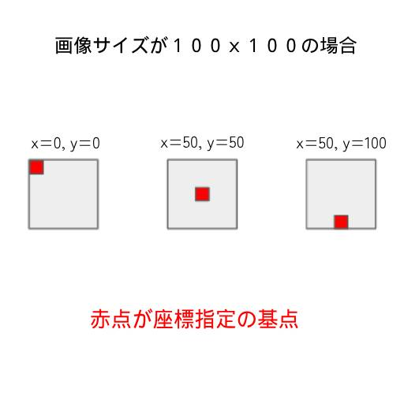

ゲームエンジンとは？
奥 隆博 2025/07/27
みなさんはゲームエンジンという言葉を聞いたことがありますか？
ゲームエンジンとは、ゲーム開発を楽にするためのソフトウェアのことです
UnityやUnreal Engine、Godotなどが有名です
今回は、私がJavaScriptで作った簡易ゲームエンジンを紹介しつつ、ゲームエンジンとは何か？について解説します
JavaScriptによる簡易ゲームエンジンの紹介
わずか４００行ほどのJavaScript製ゲームエンジンを作りました
このゲームエンジンを使い、無限草抜きゲーム（？）を作りました
機能としてはAsepriteで作ったスプライトアニメーションを再生
当たり判定
オブジェクトの生成と消滅
親子関係の設定←これを使ってパーティクルも作成しています
物理エンジン←今回は使ってませんが・・・
JavaScriptでアニメーションの制御を行いシナリオ再生しています
この中で、重要なのはAsepriteからの取り込みです
Asepriteはスプライトアニメーションを作るためのソフトウェアです
アニメーションのタイミングや、スプライトシートの切り取り範囲などをjson形式で出力できます
このjsonデータを読み込み、アニメーションを再生する機能をゲームエンジンに実装しています
なんだそんなことかと思うかもしれませんが、グラフィッカーさんが作ったスプライトアニメーションを、プログラマーがゲームに組み込む作業は意外と大変です
ゲームエンジンを使えば、グラフィッカーさんが作ったスプライトアニメーションを簡単にゲームに組み込むことができます
そして一度この作り方がわかれば、言語やゲームマシンに左右されず、同じようなゲームエンジンを作ることも容易なのです
例えばわたしは、iPad初期に、Objective-Cでゲームエンジンを作ってゲームを作っていました
同じことはスーパーファミコン時代から繰り返してきたことです
以下が、私が作った無限草抜きゲームのプレイ動画です
無限草抜きゲームの解説
超簡単に全体の流れを説明します
ゲームエンジンではスプライトがデータに従って動きます
ゲームエンジン全体は一定時間で繰り返すループとなっています。このループを「ゲームループ」と呼びます
ゲームループの中で、スプライトのアニメーションを進めたり、物理演算を行ったり、画面に描画したりします
まず前もって以下の処理を記述しておきます
- 草のスプライトに「Mebae」が終わったら「Idle」になるように登録
- 草のスプライトに「Idle」が終わったら「REPEAT」するように処理を登録
- 草のスプライトに当たり判定時に「Pickup」へ切り替える処理を登録
無限草抜きゲームでは、以下のような流れです
- 草が６０個未満の場合以下の処理を行う
- 草をランダムな位置に「Mebae」状態で配置
- 最初へ戻る
前もって処理を書いてあるので、メインループではゲームの流れの部分だけであとはドミノ倒しのようにゲームが進みます
githubのソースでは、さらに画面クリア、BG描画、クリック時のパーティクル表示、マウスカーソル位置に照準となるスプライトの表示も行っています。
このように聞くと結構沢山の機能があるとお判りいただけるかと思います
しかし、これらすべてをループ内でオブジェクトを登録することで実現しているため
思ったほど複雑なループにはなっていないはずです
画像素材について
アニメーションを作るための画像は、「Aseprite」というスプライトエディタで作りました
また、「Aseprite」ではアニメーションのタイミングや間隔、スプライトシートの切り取り範囲などをjson形式で出力できます
「Aseprite」は便利なのでオススメです
スプライトの基点についての補足説明
座標指定の基点を指定できる
画面に絵を描画する時、以下のような考えでＸ，Ｙ座標を指定しますよね？

その際、普通は座標を計算するプログラムを書かなくてはいけませんが、このゲームエンジンではその指定ができます
つまり、コードの記述量が減ります
一番右の例は対戦格闘など、キャラクターの地面の立ち位置を基点にして表示する時に使います
真ん中の例は、雪の結晶や光を四方八方に光を散らせるパーティクル効果を表現する際に使われます
このようにゲーム開発では都合に合わせて、どこを基点に表示するのか変わってくると思います
これらをプログラムで一々調整するのではなく、「Aseprite」などのアニメーションデータで雪がチラつくようなアニメーションを組み、それを再生させながら四方八方に散らせて、最後はアニメーションの透明度で消えていくようにすればいいよねっていう発想です。
大体のゲームエンジンも、このように画像側主体で動かしてるみたいで、基本的な考え方でもあります
つまり、画像が自分で自分の次のフレームの画像を切り替え、自分の位置も切り替えるということです
プログラムはその切り替えるアニメーションパターンや、四方八方に飛び散る物理演算を設定するだけで、あとは画像側が勝手に動く
無限草抜きゲームでは、「Mebae」「Idle」「Pickup」のアニメーションパターンをAsepriteで作っています
Mebaeは草が芽吹いて双葉が開くまでのスプライトアニメーションです
Idleは草が生えた後、じっとしているアニメーションです
Pickupは草が抜かれるアニメーションです←昇天して薄くなります
草の生成上限は60個にしています
ゲームエンジンは画面の表示位置以外も担当しています
当たり判定、繰り返し、消滅、親子関係（親に追従するかしないかの指定も可）、音声再生などなどです
例えば何もないスプライトを親にし、その子供としてダンジョンマップを登録する
上下左右の移動で、何もない親スプライトの位置を変えれば子供の位置が全部変わる
つまりマップがスクロールします
例えばぷよぷよのぷよが、自分の上下左右に自分と同じぷよがいるかどうかを調べ、自分の体を変形させる（その際、変形用アニメも用意されていればスムーズに変形する）
こういったことを、プログラムだけでやるとすごく大変です
ゲームエンジンを使えば、スプライトが自分のシナリオに沿って自分の姿形を変え、消滅したり、新たなスプライトを生む出したりもできます
ゲームエンジンのシナリオデータだけで、自分がやられたら、子供をたくさん生み出すような敵も作れます
子供は子供の攻撃パターンで動くこともでき、物理エンジンの一種として登録させることもできます
ゲームエンジンがあれば、これらの処理を全部同時に動かすことができます
RPGもシューティングも格闘ゲームもパズルも同じ要領で作れます
これがゲームエンジンを使うメリットなのです
まとめ
いかがだったでしょうか？。
この記事が皆さんのお役に立てたら嬉しいです。
ではまた！